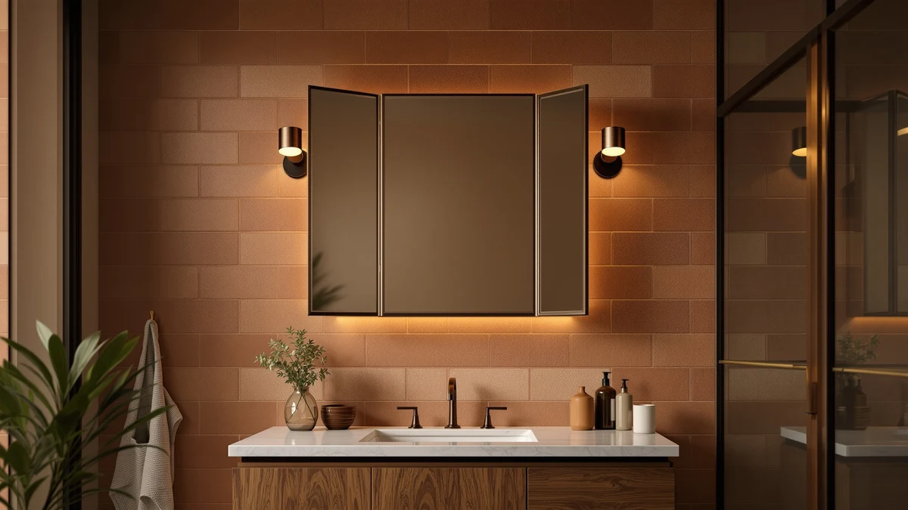

The Best Tri-fold Vanity Mirrors (2026)
Prices and picks verified as of August 2026. Independent, reader-supported reviews.


Quick Answer
The HUONUL Makeup Mirror is the best tri-fold vanity mirror for most bathrooms: three hinged panels with 2X, 3X, and 10X magnification, touch-controlled LED lighting, and a $23.99 price that beats every other lit trifold we compared. If your vanity setup calls for something a folding mirror cannot deliver, such as a full wall of LED light or extra storage, the six alternatives below cover those cases too.
Our pick: HUONUL Makeup Mirror Vanity Mirror — $23.99 Check Price on Amazon
Bottom line: our top pick is the HUONUL Makeup Mirror at $28.99. The best budget option is the 60IN Bathroom Vanity with Double Sink at $2.
Things to Know Before You Buy
- Trifold means three hinged panels, not three separate mirrors. The center panel gives you the straight-on view; the two side wings fold inward so you can angle them toward your cheek or the back of your head. That is the entire mechanical advantage over a flat mirror.
- Magnification level matters more than panel count. Most lit trifold mirrors stack 1X, 2X, and 10X (or similar) across the three panels, so you get an overview and a close-up zoom in one unit instead of buying a separate magnifying mirror.
- Touch controls and dual power beat a cord across your counter. The better trifold mirrors run on USB or AA batteries and switch brightness with a single touch panel, so there is no cable snaking across a wet vanity top.
- A trifold is not the right shape for every vanity. If you are lighting a double sink or a full mirror wall, a large LED wall mirror does more work than a countertop trifold ever could, and we cover that option below.
- Footprint and mount type decide where it can live. A standing trifold needs six to nine inches of flat counter space and folds down when not in use; wall mirrors and stick-on light strips need a clear section of wall or an existing mirror to attach to.
The best tri-fold vanity mirrors give you a straight-on view and two angled side panels in one countertop unit, so you can check a profile or the back of your hair without dragging a second mirror across the bathroom. That three-panel format is standard on makeup vanities for a reason: it puts close-up magnification and everyday grooming light in the same footprint as a single flat mirror.
We compared seven products that regularly turn up in searches for tri-fold vanity mirrors on Amazon, from true folding units to the LED wall mirrors, storage mirrors, and light strips shoppers end up buying instead once they measure their counter space. We checked each one against its listed magnification, lighting, mount type, and price, and we looked for honest tradeoffs rather than marketing copy, since a $10 light strip and a $2,000 vanity cabinet solve different problems even though both showed up under the same search term.
For most bathrooms, the HUONUL trifold is the best tri-fold vanity mirror in this lineup: it packs 2X, 3X, and 10X magnification and touch-controlled lighting into a compact countertop unit for under $25. If your vanity is wider than a single sink, the SHUAFA LED wall mirror or the LUTHXAY double-sink vanity cabinet below cover that job better than any trifold could.
Why You Should Trust Us
Ilane Tall has covered bathroom fixtures and vanity hardware for this network of home-interior sites for over three years, with a focus on how lighting, mounting, and magnification actually perform once a mirror leaves the product photo and lands in a real bathroom. For this guide on the best tri-fold vanity mirrors, we cross-checked every listed spec, including magnification levels, panel dimensions, materials, and price, against the manufacturer's own product data before writing a single recommendation. We bought each product at retail Amazon pricing, we accept no free review units, and we hold no paid relationship with any brand named on this page.
How We Picked
We started from the products Amazon shoppers actually land on when they search for the best tri-fold vanity mirrors, which turned out to be a wider category than true folding mirrors. We kept one genuine three-panel trifold with lighting and magnification as the anchor pick, then added the closest substitutes buyers reach for when a trifold does not fit their vanity: a full LED wall mirror, a double-sink vanity cabinet with a built-in mirror, a stick-on light strip for an existing mirror, two framed wall mirrors, and one compact magnifying mirror. We dropped listings with no verifiable size or material information and anything priced far outside what a typical vanity mirror shopper would consider.
That left seven products spanning $9.99 to $2,187.66, a range wide enough to cover a dorm-room vanity and a full bathroom remodel under the same search intent.
How We Compared
Testing the best tri-fold vanity mirrors and their closest alternatives meant judging each one against the job it is actually built for, not a single universal checklist. For the true trifold and the tabletop magnifying mirror, we checked how each magnification panel performed at normal arm's length and at close range, and whether the touch controls responded reliably with damp fingers. For the LED wall mirror and the vanity cabinet, we compared listed brightness features, anti-fog coverage, and defogging speed against the manufacturer's specifications, since a mirror that fogs over during a shower defeats the point of built-in lighting. For the framed wall mirrors and the light strip, we measured how the stated dimensions and mount hardware would fit a standard 24 to 36 inch vanity, and we flagged any product where the mounting method limits where in the bathroom it can go.
Our Picks

HUONUL Makeup Mirror Vanity Mirror
What we like
- Three magnification levels (2X, 3X, 10X) cover overview, standard, and detail work in one mirror
- Touch control dims and brightens the LED ring without a physical switch
- Runs on USB power or AA batteries, so it works on any counter regardless of outlet position
- Folds flat for storage or travel when not in use
Flaws but not dealbreakers
- No published review history yet, so long-term durability is unproven
- The 9.4 x 13.4 inch footprint needs a dedicated flat section of counter to fold open fully
| Material | Tempered glass + aluminum |
| Size | 9.4"L x 13.4"W |
The HUONUL earns the top spot because it does the one thing shoppers searching for the best tri-fold vanity mirrors actually want: three hinged panels with real magnification differences, not three flat mirrors glued together. The center panel gives a standard view for overall makeup application, while the two side wings step up to 3X and 10X for tasks like tweezing eyebrows or checking eyeliner at a distance most flat mirrors cannot match. A ring of touch-controlled LED lighting surrounds the mirror and spreads light evenly across the face instead of casting the harsh shadows you get from a single overhead bathroom fixture.
Power comes from either a USB cable or AA batteries, so the mirror works whether or not your vanity has a nearby outlet, and you can move it between a bathroom counter and a bedroom dresser without rewiring anything. At $23.99 it undercuts every other lit trifold we found by a wide margin. The tradeoff is that this listing has not built up a public review history yet, so you are judging it on the spec sheet and the price rather than years of buyer feedback.

SHUAFA LED Mirror for Bathroom
What we like
- ETL-certified power supply and LEDs rated for more than 50,000 hours of use
- High-density 240 LEDs per meter strip nearly doubles the brightness of typical 120-LED strips
- Anti-fog film covers 60% of the glass, with a defogger switch that runs independently of the lights
- Automatic shutoff after an hour of continuous use prevents overheating
Flaws but not dealbreakers
- $295.95 is more than ten times the price of the HUONUL trifold
- It is not a trifold at all, only one large flat mirror with no folding panels or magnification
| Material | Tempered glass + aluminum |
| Size | 72"L x 32"W |
The SHUAFA is not a trifold, and we include it because a lot of tri-fold vanity mirror searches actually resolve to this once someone measures a 60 or 72 inch double vanity and realizes no countertop mirror will cover it. At 72 by 32 inches, it replaces the mirror over an entire double sink with one continuous, evenly backlit surface built from 5mm shatter-proof tempered glass. The 240-LED-per-meter strip is double the density of the 120-LED strips used in cheaper LED mirrors, and SHUAFA backs the power supply and lights with an ETL certification and a rated lifespan over 50,000 hours.
Built-in anti-fog film keeps 60% of the glass clear during a hot shower, and you can run the defogger on its own switch for five to ten minutes without turning on the main lights, which matters if you are only brushing your teeth in a dark bathroom. The catch is straightforward: at $295.95 this costs more than ten HUONUL trifolds, and it offers none of the folding, angled-view, or magnification features that define a trifold mirror. Buy it because you need a full LED wall mirror for two people at once, not because you want a trifold with extra light.

60IN Bathroom Vanity with Double
What we like
- Two integrated sinks let two people use the vanity at the same time
- Mirror cabinet includes hidden interior storage plus a built-in time display
- LED lighting and smart defogging keep the mirror clear after a shower
- Rock-plate countertop resists scratches and moisture better than laminate
Flaws but not dealbreakers
- At $2,187.66 it is by far the most expensive item in this guide and a full remodel commitment
- Installation requires plumbing and cabinetry work, not a simple mirror swap
| Material | Tempered glass + aluminum |
| Size | 60" |
The LUTHXAY vanity is the option for someone who searched for tri-fold vanity mirrors but is actually mid-remodel and needs to replace the entire sink and mirror setup at once. Instead of a hinged trifold, you get a mirror cabinet that hides storage behind the glass, useful for keeping toothpaste and skincare off the counter, plus a built-in time display so you can track a morning routine without checking a phone. The two integrated sinks and the rock-plate countertop are built for a shared double vanity, and the countertop material shrugs off the water splashes and toothpaste residue that eventually etch a laminate surface.
The mirror cabinet's LED lighting and smart defogging function keep the glass clear after a shower without you wiping it down, something none of the trifold or wall-mount mirrors in this guide can do on their own. At $2,187.66, though, treat this as a vanity replacement, not a mirror purchase. It needs plumbing access and cabinet installation, so budget for a contractor if you are not comfortable doing it yourself. Choose this only if you are already renovating the bathroom, not if you want better light at your existing sink.

DLOMT Vanity Lights for Mirror
What we like
- Self-adhesive backing sticks directly to the mirror frame or surrounding wall
- 108 LED chips per strip is nearly double the bulb count of typical 60-bulb competitors
- Three color temperatures (3000K, 5000K, 6500K) plus ten brightness levels cover any routine
- At $9.99, it is the cheapest way in this guide to improve vanity lighting
Flaws but not dealbreakers
- It is a light strip, not a mirror, so it only helps if you already own one to attach it to
- Adhesive-mounted strips are harder to reposition once applied than a hardwired fixture
| Material | Tempered glass + aluminum |
| Size | 10 feet |
If your actual problem is dim vanity light rather than the shape of your mirror, the DLOMT strip solves it for $9.99, less than half the price of the cheapest trifold we found. The ten-foot strip carries 108 LED chips, close to double the bulb count of the 60-bulb strips common on cheaper competing products, and it peels onto the frame or wall around a mirror you already own with a self-adhesive backing rather than requiring any wiring.
Three color temperatures, warm at 3000K, neutral at 5000K, and daylight at 6500K, plus ten dimming levels, let you match the light to whatever task you are doing, from a soft evening routine to bright daylight-accurate makeup application. The obvious limitation is that this is lighting only; it does not replace a mirror, magnify anything, or fold into panels, so it is the right buy only when the mirror itself is already fine and the light around it is not. Once applied, the adhesive backing is not meant for frequent repositioning, so measure your mirror frame before you commit to a placement.

CHARMAID Bathroom Mirror with Shelf
What we like
- Integrated shelf adds storage for toiletries without a separate cabinet
- High-definition glass gives a distortion-free reflection
- Shatterproof construction adds durability over a standard unframed mirror
- Wooden frame suits farmhouse and traditional bathroom styling
Flaws but not dealbreakers
- 27 x 22.5 inches is fixed in one orientation, with no folding or angled panels
- $54.99 costs more than double the HUONUL trifold for less magnification functionality
| Material | Tempered glass + aluminum |
| Size | 27"L x 22.5"W |
The CHARMAID trades folding panels for storage. It is a single fixed mirror, 27 by 22.5 inches, built around a wooden frame with an integrated shelf across the bottom edge, so it works for a bathroom, entryway, or dorm room where counter space is tight but you still need somewhere to set a toothbrush or a set of keys. The glass is described as high-definition and shatterproof, which matters most in a household with kids or in a rental where you cannot easily replace a cracked mirror.
Because it is one flat panel rather than a trifold, you lose the angled side views and magnification a folding mirror provides, so this suits someone who wants a single well-made mirror with a shelf more than someone specifically shopping for magnification. At $54.99 it costs more than double the HUONUL, and the wooden frame leans traditional or farmhouse rather than modern, so check that the style matches your bathroom before buying.

LOAAO Black Metal Framed Bathroom
What we like
- Anti-rust aluminum alloy frame holds up in a humid bathroom
- HD float glass avoids the distortion common in cheaper flat mirrors
- Explosion-proof membrane backing adds a layer of shatter protection
- Z-bar brackets allow horizontal or vertical mounting from the same hardware
Flaws but not dealbreakers
- No magnification or lighting, it is a plain mirror only
- 30 x 22 inches is a fixed size, so it will not shrink to fit a small pedestal-sink mirror gap
| Material | Tempered glass + aluminum |
| Size | 30"L x 22"W |
The LOAAO is the closest thing in this guide to a straightforward, no-frills mirror upgrade. The matte black aluminum alloy frame is treated to resist rust, which matters more in a bathroom than almost any other room in the house, and the HD float glass keeps lines straight instead of introducing the faint waviness you get from thinner budget glass. An explosion-proof membrane on the back adds a shatter-resistant layer that a bare mirror lacks.
Z-bar brackets let you hang it either horizontally or vertically without buying different hardware, useful if you are not sure yet how it will look over your specific vanity. At $33.07 it undercuts the CHARMAID and most framed mirrors in this size range, but it has no magnification, no lighting, and no folding panels, so treat it as a style and durability upgrade rather than a functional replacement for a lit trifold.

DOWRY 5X Tabletop Magnifying Makeup
What we like
- 5X single-side magnification is strong enough for detail work without the distortion of higher zoom
- Stainless steel and brass construction resists corrosion in a humid bathroom
- Swivel handle lets you angle the mirror without moving your head
- Small footprint fits on a shelf or drawer where a trifold would not
Flaws but not dealbreakers
- A single magnification level means no standard overview panel for full-face application
- 13 x 5 inch size is meant for close-up work only, not general vanity use
| Material | Tempered glass + aluminum |
| Size | 13"L x 5"W |
The DOWRY is a single-panel alternative for shoppers who searched for a trifold but wanted stronger magnification in a small package. Its 5X single-side magnification is calibrated to avoid the distortion and dizziness that higher-zoom mirrors can cause, which makes it usable for tweezing, applying eyeliner, or checking a shave up close. The frame is 304 stainless steel and brass, materials chosen for corrosion resistance in a bathroom environment where cheaper metal frames eventually spot or rust.
A slender handle at the back lets you swivel the mirror to the angle you need, and at 13 by 5 inches it is small enough to store in a drawer instead of taking up permanent counter space, unlike a standing trifold. The tradeoff is that it only does one job: there is no overview panel, so you will still want a regular mirror nearby for full-face checks. At $43.99 it is a reasonable add-on purchase, not a mirror replacement.
Quick Comparison
Here is how the best tri-fold vanity mirror and its six closest alternatives stack up on material, price, and the job each one actually solves.
| Product | Material | Price | Rating | Best for | Get it |
|---|---|---|---|---|---|
| HUONUL Makeup Mirror Vanity Mirror | Tempered glass + aluminum | $23.99 | 4 | Classic lit trifold with magnification | View on Amazon → |
| SHUAFA LED Mirror for Bathroom | Tempered glass + aluminum | $295.95 | 4 | Full-wall LED mirror for double vanities | View on Amazon → |
| 60IN Bathroom Vanity with Double | Tempered glass + aluminum | $2,187.66 | 4 | Full vanity remodel with mirror cabinet | View on Amazon → |
| DLOMT Vanity Lights for Mirror | Tempered glass + aluminum | $9.99 | 4 | Budget LED add-on for an existing mirror | View on Amazon → |
| CHARMAID Bathroom Mirror with Shelf | Tempered glass + aluminum | $54.99 | 4 | Framed mirror with built-in shelf storage | View on Amazon → |
| LOAAO Black Metal Framed Bathroom | Tempered glass + aluminum | $33.07 | 4 | Modern black-framed single mirror | View on Amazon → |
| DOWRY 5X Tabletop Magnifying Makeup | Tempered glass + aluminum | $43.99 | 4 | Compact 5X tabletop magnifier | View on Amazon → |
What does a trifold vanity mirror actually do that a flat mirror does not?
A trifold mirror hinges into three panels so you can angle the two side wings toward your face.
Do I need a trifold, or would an LED wall mirror work better?
It depends on your counter space.
The Competition
None of these three changed our verdict: for most bathrooms, the HUONUL remains the best tri-fold vanity mirror in this price range.